orbit register，终端打开这个页面，你在这里批准它成为账号下的 runner。两边都是真实页面截图：左边是今天的页面，用你截图里同一份数据渲染；右边是新设计，原型代码在同目录 prototype.patch。新页面复用登录页现有的样式和组件（渐变、轨道环、App 图标、胶囊按钮、Alert、Badge），不新造外观。页面文案全部英文。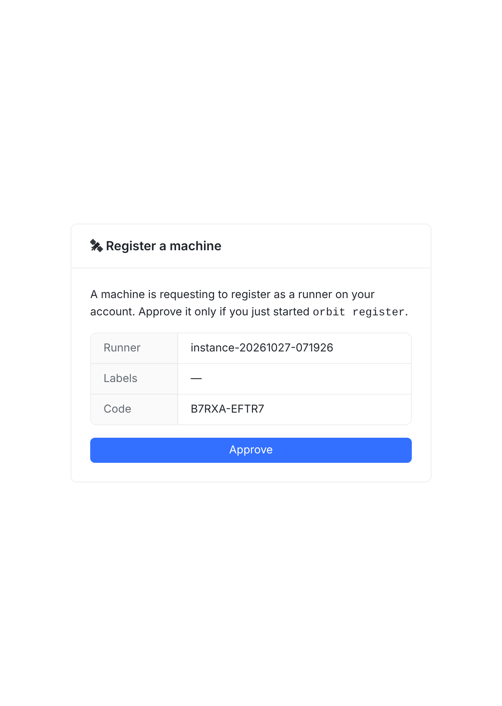
12345orbit register 时批准）埋在正文里。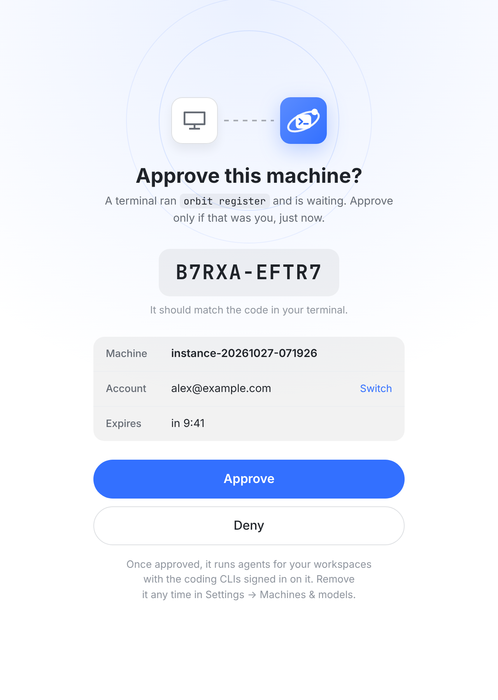
123456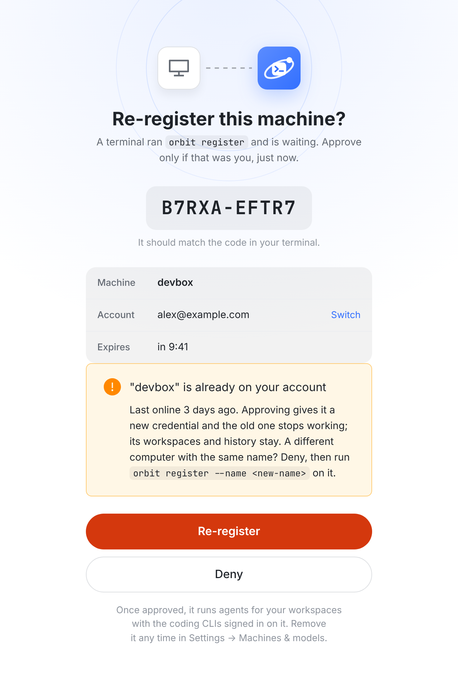
12--name 换个名字注册。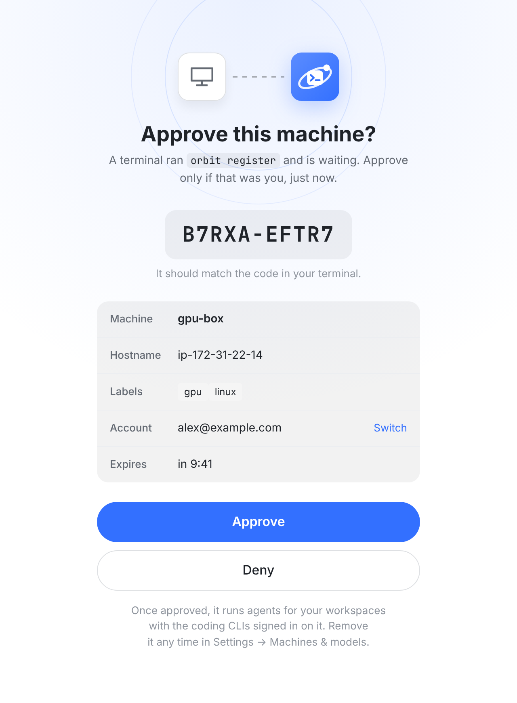
1orbit register --name gpu-box --labels gpu,linux：机器名和 hostname 不同时，多出一行 Hostname；带了 labels 才出现 Labels 行。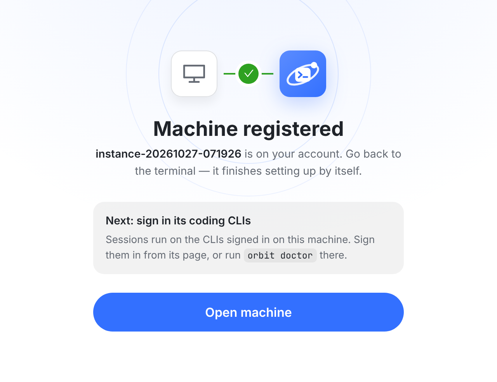
12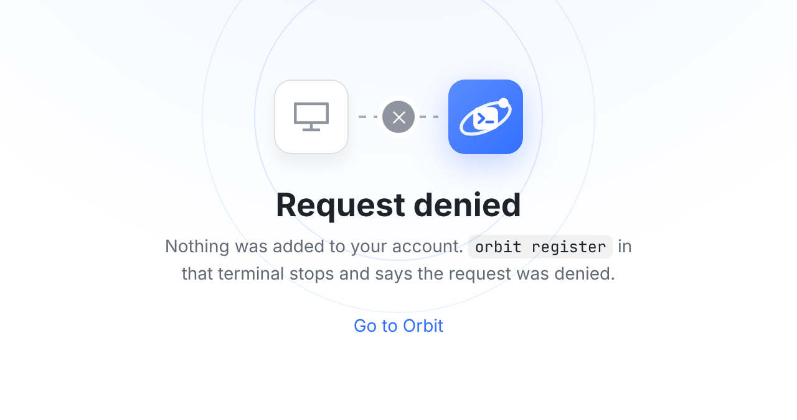
orbit register 收到 denied 后打印原因并退出（需要 CLI 配合，见待定 1）。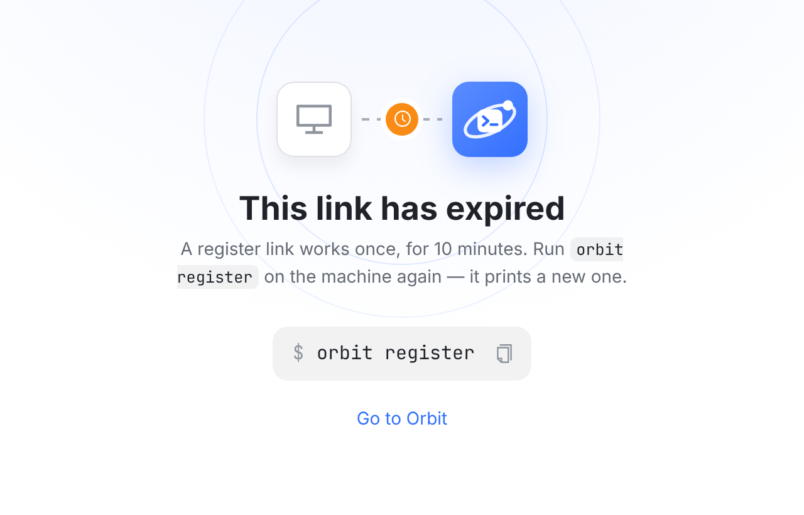
1orbit register。打开时已过期，或者页面开着时倒计时走到 0、点击时服务端返回 404，都落到这一页。链接里缺 code 时，同一个页面只换标题和副标题（下图）。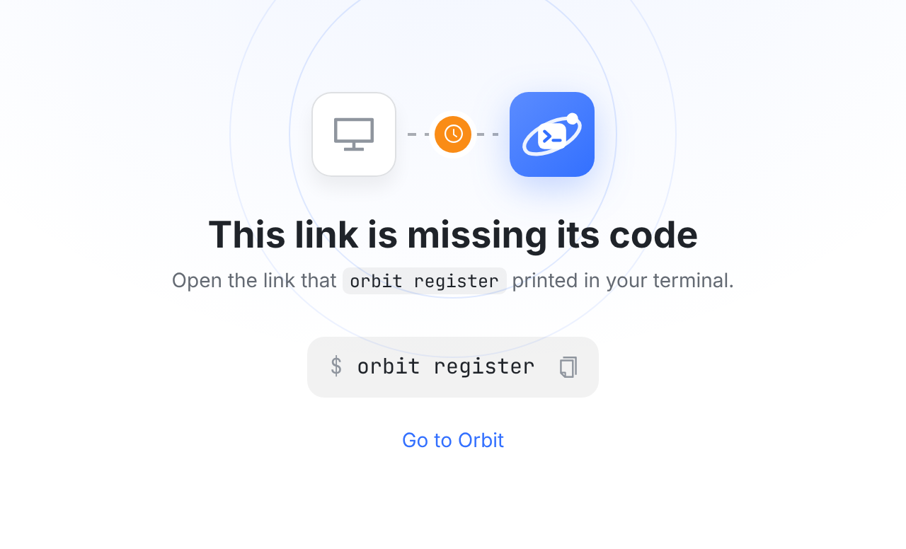
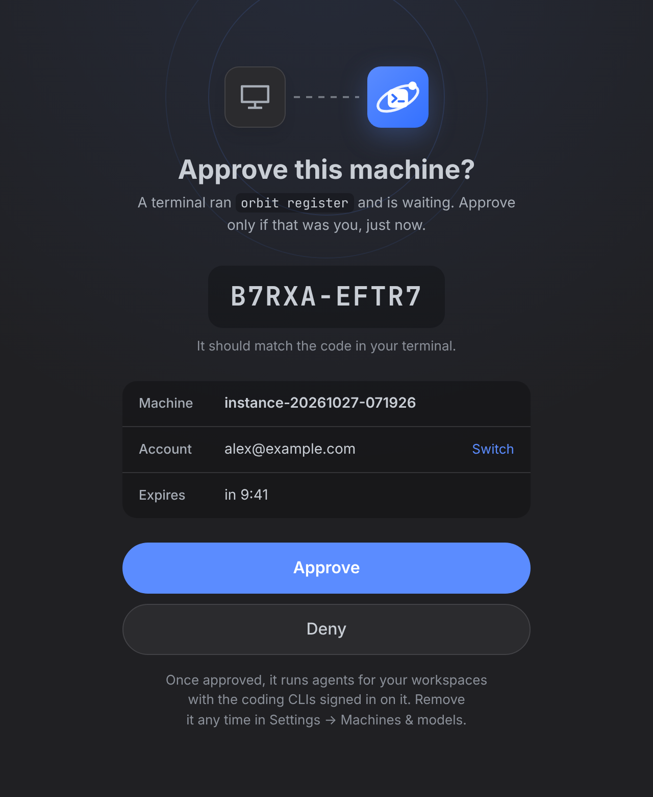
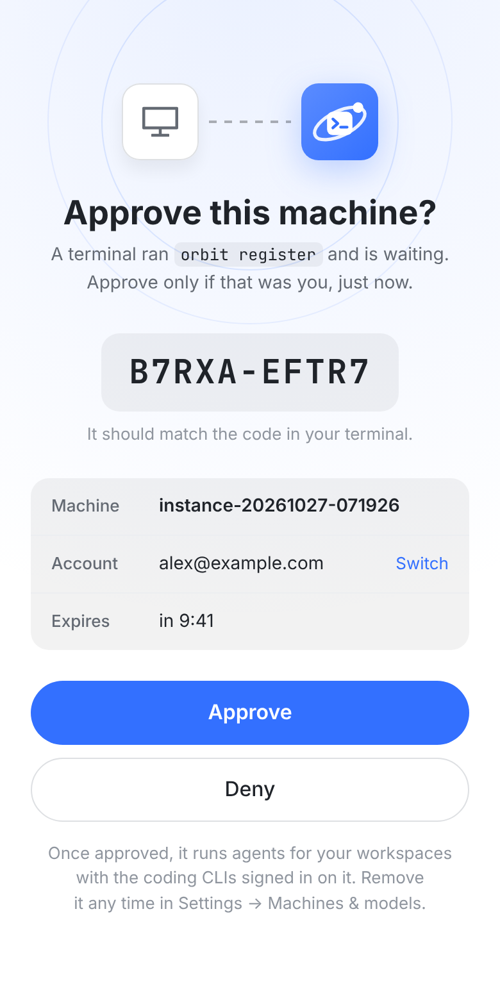
orbit login 的审批页已经有 Approve 和 Deny 两个按钮。DENIED，新增 POST /runners/device/:code/deny，轮询返回 denied。CLI：收到后打印 “registration was denied in the browser” 并以非 0 退出。两张审批页的行为一致；遇到别人发来的链接，也有一个明确的动作可以拒绝。orbit register，再把链接发给你。他发来的链接里，验证码和页面上显示的永远一致。真正能防住的是“这个请求从哪里来”。device/start 时记下请求方 IP，审批页在 Account 上面加一行 From，和当前浏览器的 IP 对比：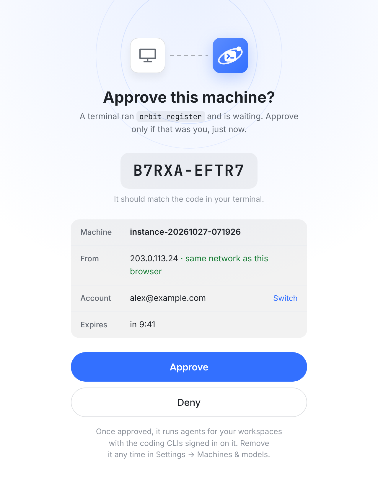
EnrollPage.tsx，index.css 加一段 .enroll-*。复用 login-page / login-orbits / OrbitAppIcon / login-submit / Alert / Button / Badge。倒计时先按 createdAt + 10 分钟计算。测试覆盖：空 Labels 不出行；Hostname 和机器名相同时不出行；倒计时到 0 和服务端 404 都切到过期页；Switch 带着 next 回到本页。expiresAt 和同名 runner 的最后在线时间；approve 接口返回 runnerId，供 Open machine 直达。